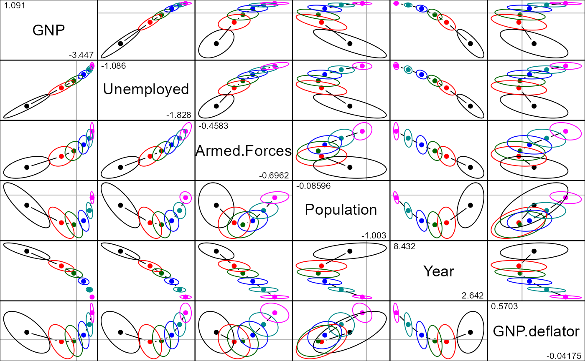
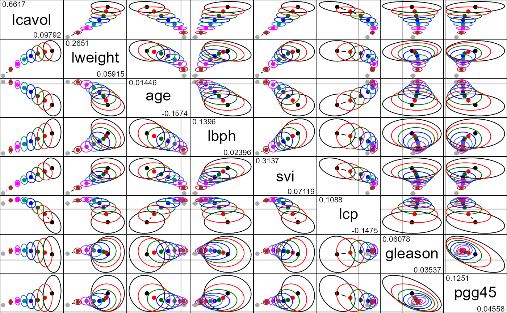

Displays all possible pairs of bivariate ridge trace plots for a given set of predictors.
Usage
# S3 method for ridge
pairs(
x,
variables,
radius = 1,
lwd = 1,
lty = 1,
col = c("black", "red", "darkgreen", "blue", "darkcyan", "magenta", "brown",
"darkgray"),
center.pch = 16,
center.cex = 1.25,
digits = getOption("digits") - 3,
diag.cex = 2,
diag.panel = panel.label,
fill = FALSE,
fill.alpha = 0.3,
...
)Arguments
- x
A
ridgeobject, as fit byridge- variables
Predictors in the model to be displayed in the plot: an integer or character vector, giving the indices or names of the variables.
- radius
Radius of the ellipse-generating circle for the covariance ellipsoids.
- lwd, lty
Line width and line type for the covariance ellipsoids. Recycled as necessary.
- col
A numeric or character vector giving the colors used to plot the covariance ellipsoids. Recycled as necessary.
- center.pch
Plotting character used to show the bivariate ridge estimates. Recycled as necessary.
- center.cex
Size of the plotting character for the bivariate ridge estimates
- digits
Number of digits to be displayed as the (min, max) values in the diagonal panels
- diag.cex
Character size for predictor labels in diagonal panels
- diag.panel
Function to draw diagonal panels. Not yet implemented: just uses internal
panel.labelto write the variable name and ranges.- fill
Logical vector: Should the covariance ellipsoids be filled? Recycled as necessary.
- fill.alpha
Numeric vector: alpha transparency value(s) for filled ellipsoids. Recycled as necessary.
- ...
Other arguments passed down
References
Friendly, M. (2013). The Generalized Ridge Trace Plot: Visualizing Bias and Precision. Journal of Computational and Graphical Statistics, 22(1), 50-68, doi:10.1080/10618600.2012.681237, https://www.datavis.ca/papers/genridge-jcgs.pdf
See also
ridge for details on ridge regression as implemented here
plot.ridge, traceplot for other plotting methods
Examples
longley.y <- longley[, "Employed"]
longley.X <- data.matrix(longley[, c(2:6,1)])
lambda <- c(0, 0.005, 0.01, 0.02, 0.04, 0.08)
lridge <- ridge(longley.y, longley.X, lambda=lambda)
pairs(lridge, radius=0.5, diag.cex=1.75)

data(prostate)
py <- prostate[, "lpsa"]
pX <- data.matrix(prostate[, 1:8])
pridge <- ridge(py, pX, df=8:1)
pairs(pridge)
